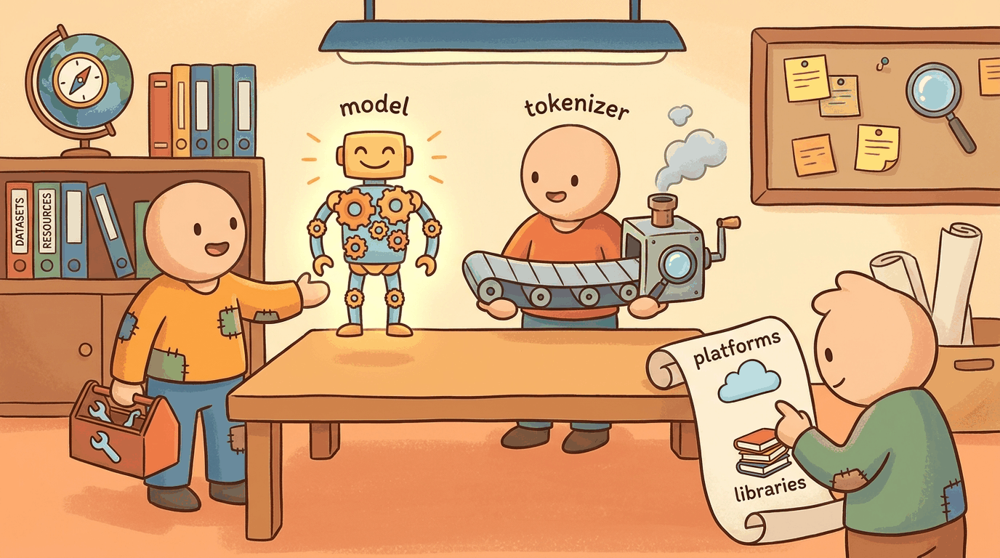

"You cannot understand a language model without first reading its tokenizer."
Author's notebook
Part II moved from "a transformer block" to "a frontier language model": tokenization at scale, the pretraining corpus, the modern open-weight zoo, the mechanistic-interpretability toolkit, and inference optimization. This chapter consolidates the toolbox. The tokenizer layer is tiktoken (OpenAI), SentencePiece (Google), and Hugging Face tokenizers (Rust). The canonical pretraining corpus is FineWeb and its educational filter FineWeb-Edu. The frontier closed-model lineup is GPT-4o through the GPT-5 family (Aug 2025), Claude Opus 4.5 (Oct 2025), and Gemini 2.5 Pro; the open-weight lineup is Llama 4 (Scout / Maverick), Qwen3, and DeepSeek-V3.1 / R1. The mech-interp tier is nnsight and TransformerLens.
For the entirety of Part II, three install lines cover everything:
uv pip install transformers tokenizers tiktoken sentencepiece datasets
uv pip install transformer_lens nnsight
uv pip install accelerate bitsandbytesThe uv installer (Astral, 2024) is the 2025-26 default; it is 10-100x faster than pip and resolves the right CUDA wheels automatically. Substitute plain pip if you must use a vanilla venv.
The first line loads any open-weight model and tokenizes any text. The second adds the mech-interp scaffolding for Chapter 11. The third lets you load 8-bit and 4-bit quantized variants on a single consumer GPU.
Sections in This Chapter
What Comes Next
Part III shifts from "knowing what a model does" to "knowing how to call one in production": the closed-API stack (OpenAI, Anthropic, Google), the unified-router layer (LiteLLM, OpenRouter), local-inference runtimes (Ollama, vLLM, llama.cpp), and the observability tier (PromptLayer, LangSmith). Chapter 16 closes Part III with its own Tools of the Trade chapter, focused on the API layer rather than the model internals you have just finished mapping.